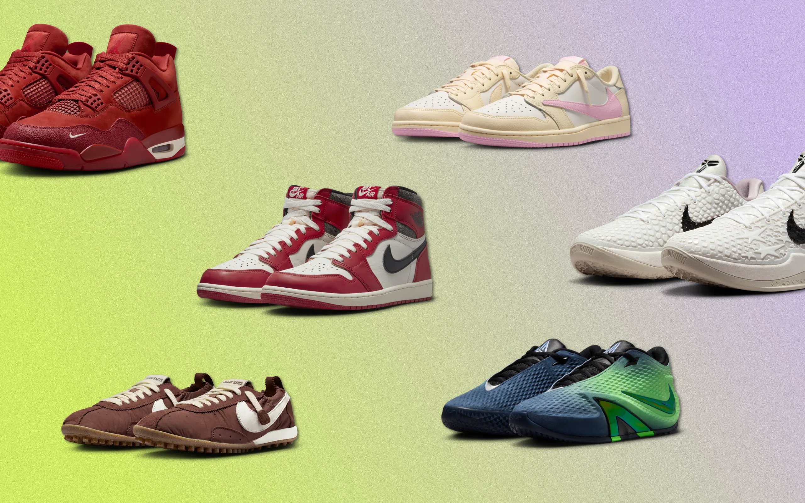
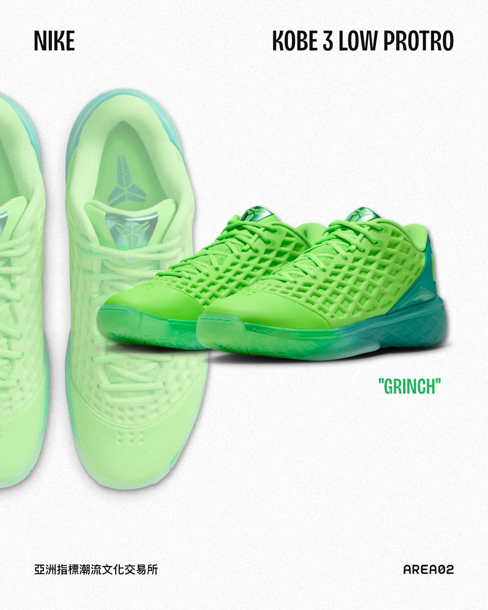
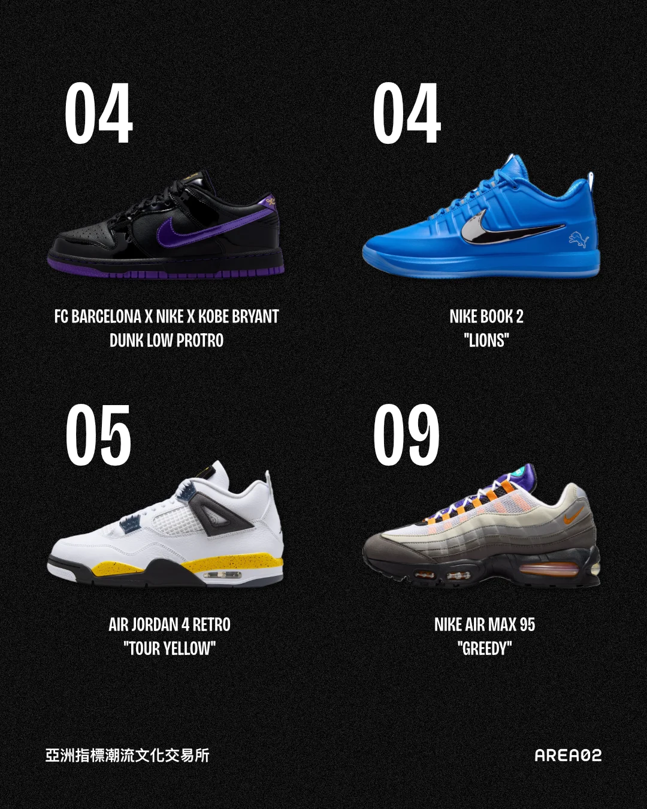
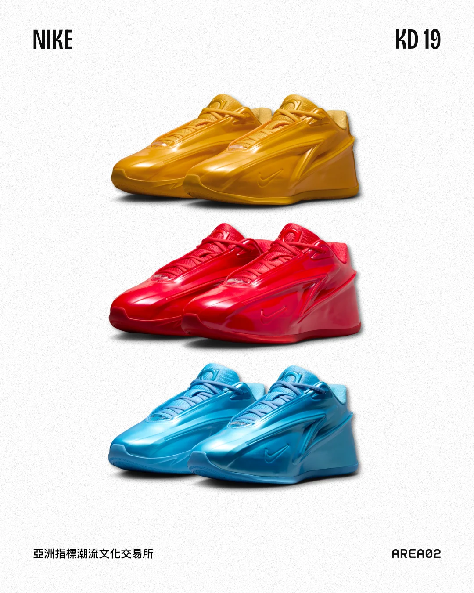
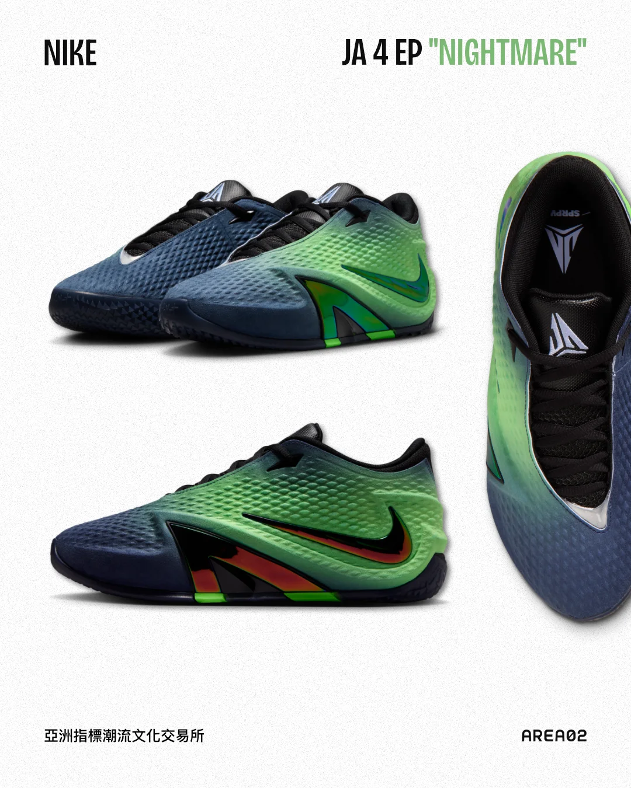
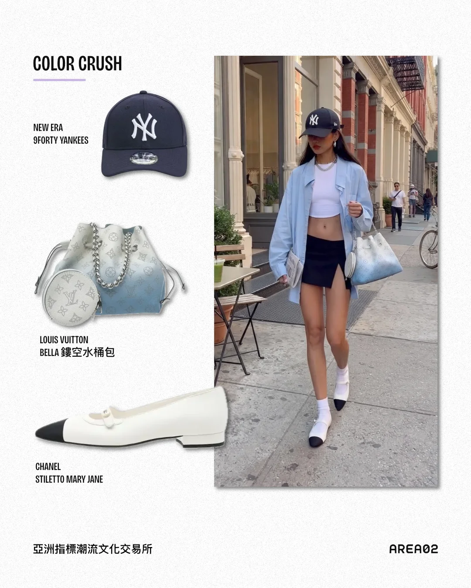
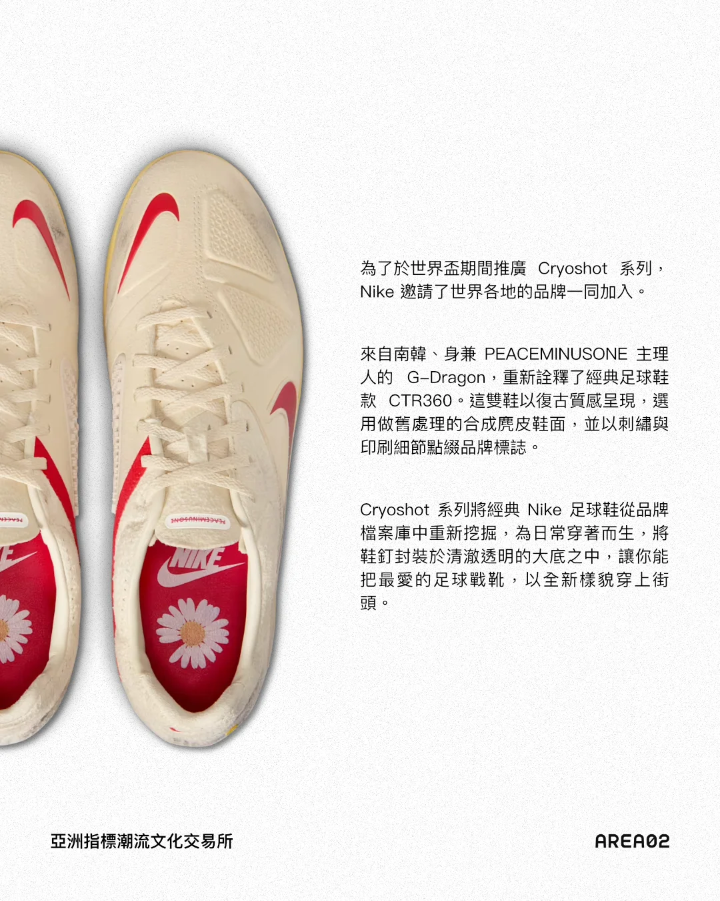

The written voice behind AREA 02's channels — spanning product launches, streetwear news, and campaign pushes across Instagram, Threads, Facebook, and LINE. It's also the through-line of a role that grew from specialist to supervisor, and of a social presence that moved from daily engagement toward measurable traffic and conversion.
2023 / 07 — 2025 / 04 Built the brand's voice from the ground up. Ran Instagram, Threads, and Facebook independently — writing the copy and shaping the layouts that kept AREA 02's tone consistent across product promotion, release calendars, and Reels unboxings. In one year, grew Instagram reach by 30%+ and added 6,000+ followers.
2025 / 11 — Now Shifted the focus to conversion. Leading the social team and strategy, reframed copy from "engagement-first" to "traffic and sales-first," syncing weekly with the product team on what to push. Rebuilt the LINE official account with conversational automation (BotBonnie, Omnichat) and channel-exclusive giveaways, lifting LINE engagement 20%+ and driving click-throughs to shopping links.
A copy voice that stayed unmistakably AREA 02 while the goal moved from awareness to conversion: 30%+ Instagram reach growth, 6,000+ new followers, and a 20%+ lift in LINE engagement that translated into higher click-through on shopping links.





